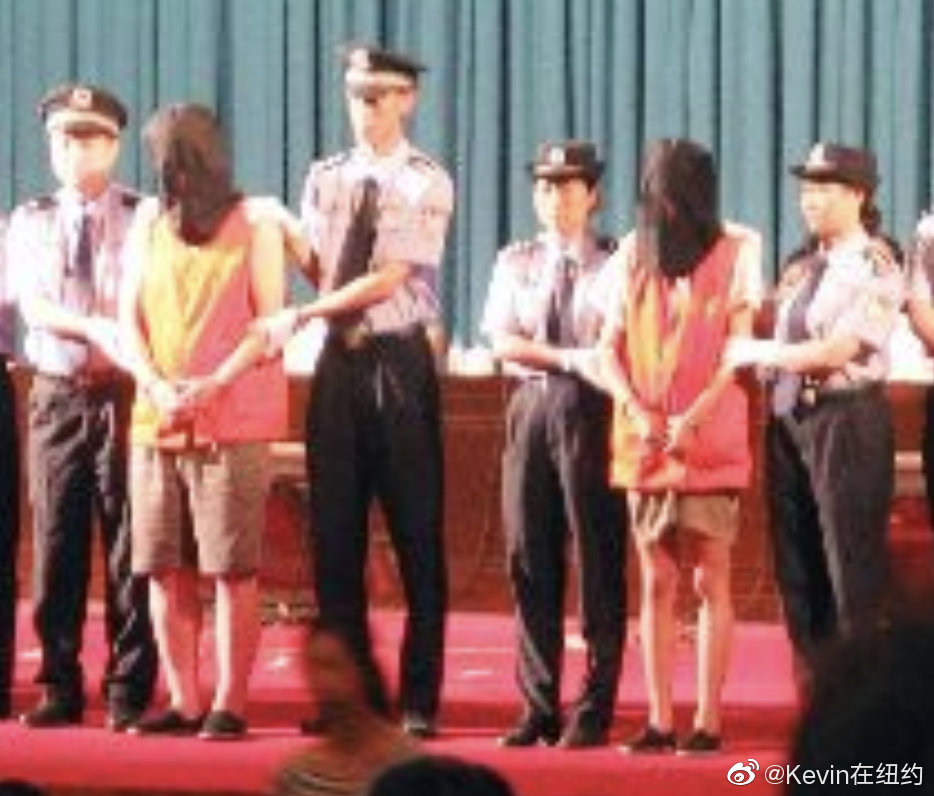

解答了个疑问//@刘耘博士:知识帖。
@Kevin在纽约:
「为什么媒体曝弑母案嫌疑人吴谢宇被打码，同样是嫌疑人的刘强东却没有？」简单说这是两国不同法律要求的结果。
严格保护隐私的美国，为什么不给犯罪嫌疑人打码，但严格保护被害人信息？涉及美国特有的文化和司法传统：
1. 美国限制嫌疑人的隐私权，除未成年犯罪外，公开嫌疑人的逮捕清晰大头照和入监照的法律考量是，刑事案件涉及公共安全，与社会治安紧密相关，在保护公共安全，犯罪嫌疑人的无罪推定特权和隐私权的权衡中，美国选择牺牲隐私权。
2. 保证公众和犯罪嫌疑人家属的知情权。任何犯罪信息都是公众知情权的一部分，美国是政务公开比较彻底的国家，公众有权了解和查询政府做出的绝大多数决策（依法律程序被确定为机密的除外）。
3. 防止警察滥权，便于公众了解和监督公权力。警察在行使拘捕权时有没有滥用，有没有选择性使用等。媒体发现某一起警察拘捕嫌疑人存疑就会报道出去，给警察执法带来压力，防止秘密逮捕。
美国警方向媒体提供被捕照片，无论对方是名人，政要还是普通人都无权申请豁免。首富比尔盖茨年轻时超速被逮捕的大头照，公众现在都能查到。
在中国和除了英国外的欧洲大部分国家，不会给嫌疑人拍大头照的法律考量是，犯罪嫌疑人没有经过司法审判，有可能逮捕错误或者被判无罪，执法机构有义务保护嫌疑人的隐私。
所以就是法律要求和考量的重点有所不同。
最后有人会问，那在美国抓错了或者判错了，因为公开照片造成的损害怎么处理？嫌疑人的隐私权被法定限制，以公开大头照为理由索赔的法律依据并不存在，所以就是没得赔的意思。
当然如果抓错或者错判的，属于冤狱，在实体上可以申请国家赔偿，可能获得大笔补偿，但理由不能仅仅是被公开了大头照而已。
.
严格保护隐私的美国，为什么不给犯罪嫌疑人打码，但严格保护被害人信息？涉及美国特有的文化和司法传统：
1. 美国限制嫌疑人的隐私权，除未成年犯罪外，公开嫌疑人的逮捕清晰大头照和入监照的法律考量是，刑事案件涉及公共安全，与社会治安紧密相关，在保护公共安全，犯罪嫌疑人的无罪推定特权和隐私权的权衡中，美国选择牺牲隐私权。
2. 保证公众和犯罪嫌疑人家属的知情权。任何犯罪信息都是公众知情权的一部分，美国是政务公开比较彻底的国家，公众有权了解和查询政府做出的绝大多数决策（依法律程序被确定为机密的除外）。
3. 防止警察滥权，便于公众了解和监督公权力。警察在行使拘捕权时有没有滥用，有没有选择性使用等。媒体发现某一起警察拘捕嫌疑人存疑就会报道出去，给警察执法带来压力，防止秘密逮捕。
美国警方向媒体提供被捕照片，无论对方是名人，政要还是普通人都无权申请豁免。首富比尔盖茨年轻时超速被逮捕的大头照，公众现在都能查到。
在中国和除了英国外的欧洲大部分国家，不会给嫌疑人拍大头照的法律考量是，犯罪嫌疑人没有经过司法审判，有可能逮捕错误或者被判无罪，执法机构有义务保护嫌疑人的隐私。
所以就是法律要求和考量的重点有所不同。
最后有人会问，那在美国抓错了或者判错了，因为公开照片造成的损害怎么处理？嫌疑人的隐私权被法定限制，以公开大头照为理由索赔的法律依据并不存在，所以就是没得赔的意思。
当然如果抓错或者错判的，属于冤狱，在实体上可以申请国家赔偿，可能获得大笔补偿，但理由不能仅仅是被公开了大头照而已。
.
- 